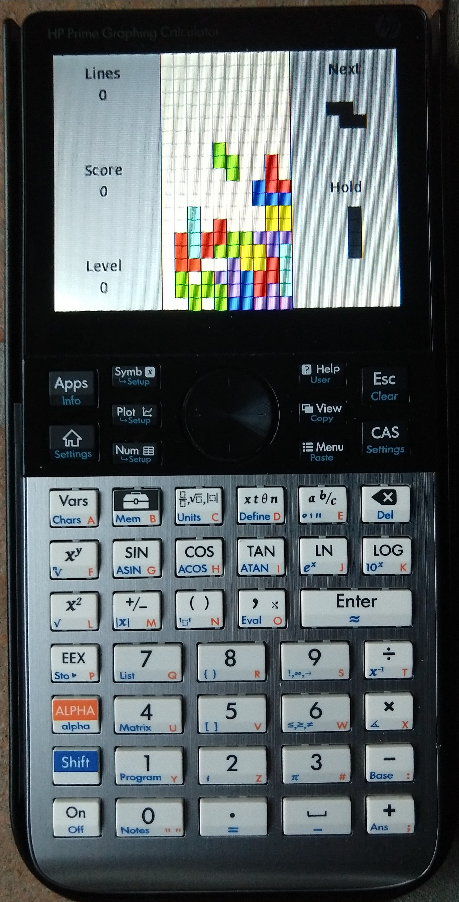

HP Prime Tetris
A tetris clone for the HP Prime graphing calculator
Overview
This is a tetris clone made for the HP Prime graphing calculator written in its HP BASIC programming language. I made it by making a bunch of improvements to Kevin Barbier’s “BRICKS” game (you can see the changes in the changelog).

Getting the Game
The easiest way to get the program onto an HP Prime is to install the HP Prime Connectivity Kit (http://www.hp-prime.de/en/category/15-software) on your computer and to connect your computer and HP Prime with the charging cable. Then you can make a new file (call it “BLOCKS”) and copy the program over. To run the game, use Shift + 1 to get to the programs menu and just run the “BLOCKS” program.
Get the code here: https://github.com/rmboyce/hp-tetris
Controls
- “Vars” and the toolbox key to move left/right
- “SIN” to drop the current piece
- “Enter” to hard drop the piece
- The delete key to rotate the piece
- “xy” (the power key) to hold the piece (you can only hold a piece once each time you get a new piece)
- “Apps” to pause
- “Esc” to quit
- “Help” for help
- “View” to choose custom keys
- “Menu” to set keys to default
- “CAS” to reset the game
Changelog
- Added a grid in the back
- Changed the colors of the pieces to match the standard tetris color scheme
- Changed the way the program picks the next piece to make it feel more random (for example, made the chance of getting the same piece twice in a row much lower)
- Added the tetris super rotation system (makes the pieces rotate intuitively)
- Added the hold function to store a piece